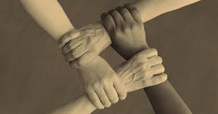
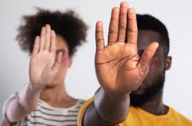
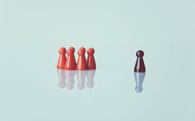
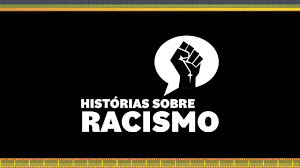
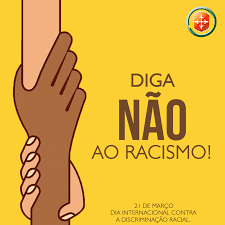

O que é Preconceito Racial?
Preconceito racial é a discriminação e julgamento negativo contra indivíduos com base na cor da pele ou características físicas. Essa atitude é baseada em estereótipos e ideias falsas sobre a superioridade ou inferioridade de certos grupos raciais.
O preconceito racial pode se manifestar de várias formas, incluindo atitudes individuais, políticas institucionais e práticas sociais que marginalizam e prejudicam grupos específicos. No Brasil, o preconceito racial é combatido por leis que visam promover a igualdade e punir práticas discriminatórias.
Tipos de Preconceito Racial
- Preconceito Estrutural: Refere-se às práticas e políticas institucionais que perpetuam a desigualdade racial.
- Preconceito Cultural: Envolve a desvalorização de culturas e tradições de grupos raciais específicos.
- Preconceito Individual: Manifesta-se através de atitudes e comportamentos preconceituosos de indivíduos.
Consequências do Preconceito Racial
O preconceito racial pode levar à marginalização e exclusão social de grupos específicos, afetando suas oportunidades de educação, emprego e acesso a serviços básicos. Além disso, pode causar danos psicológicos e físicos às vítimas.
Legislação no Brasil
No Brasil, o preconceito racial é combatido por leis, como a Lei n. 7.716/1989, que prevê penas para práticas discriminatórias e preconceituosas.
História do Preconceito Racial
O preconceito racial tem raízes históricas profundas, muitas vezes ligadas a práticas coloniais e escravistas. No Brasil, a abolição da escravidão em 1888 foi um marco importante, mas a luta contra o preconceito racial continua sendo uma realidade até hoje.
Combate ao Preconceito Racial
Combater o preconceito racial requer ações contínuas e colaborativas. Isso inclui a promoção da educação sobre diversidade, a criação de políticas públicas que promovam a inclusão, e o apoio a movimentos sociais que lutam pela igualdade racial.